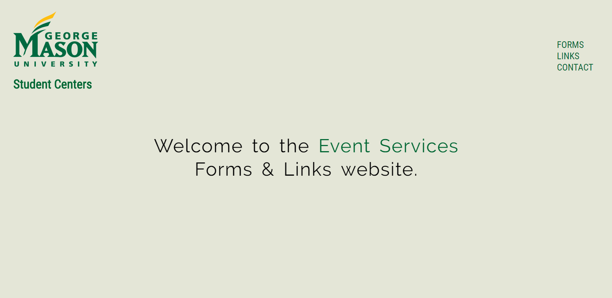
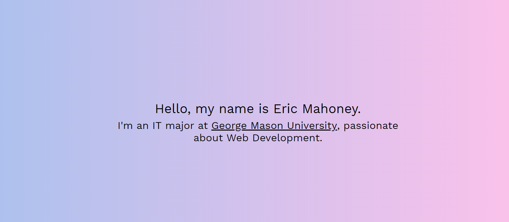

Hello, my name is Eric Mahoney.
I'm an IT major at George Mason University, passionate about Web Development.

About Me:
My name is Eric, I'm 20 years old, and I'm an aspiring web developer. I've been interested in computers for as long as I can remember. Even as a little boy, I've always loved building them, taking them apart, modding video games, and my new obsession: programming.
Currently, I study Information Technology at George Mason University with a concentration in Cyber Security. However, my main passion lies in Web Development and programming.
In my free-time, I love to run. Earlier in the year, my sister and I ran our first 5K and I fell in love with it. Currently, I run over 10 miles a week and I plan to start training for the DC Marathon soon!
I'm also an avid follower of Soccer (Manchester City), Football (NY Giants), and I love listening to EDM.
Projects:
Event Services Mockup
The website linked above was a site I developed for my work, Event Services. I work as an Event Operations Assistant and we use this site regularly to access certain forms. While it is functional, it looks a bit outdated. So, off the clock I did a mockup of how I would design the site if I could do it myself. It's mainly HTML, CSS, and JavaScript. I chose to use jQuery for the easy selectors, the fadeIn() function, and the hide() function.
Portfolio Website
Another project that I want to talk about is, well, this site. I developed the core of this site in about 8 hours or so, give or take, and I've been basically maintaining it and updating it since then. This was a very fun project and it taught me a lot! It's my also my first portfolio site. For this website, I chose to use Javascript's jQuery framework for all of the main animation on the screen. I wasn't sure how to do this at first, and had a lot of fun learning it along the way, even if I did have to rework the logic a couple of times. I also used Bootstrap for page responsiveness and the navbar at the top of the screen.

Connect with me!